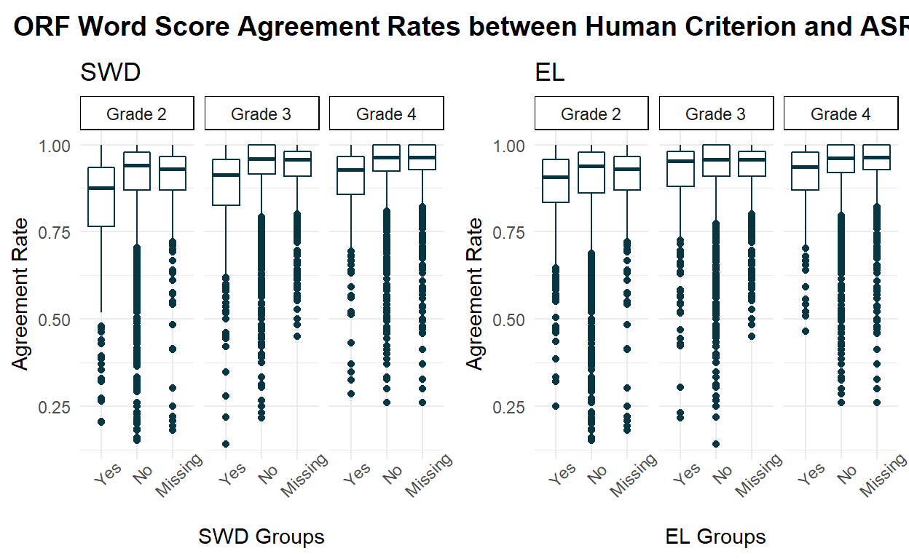
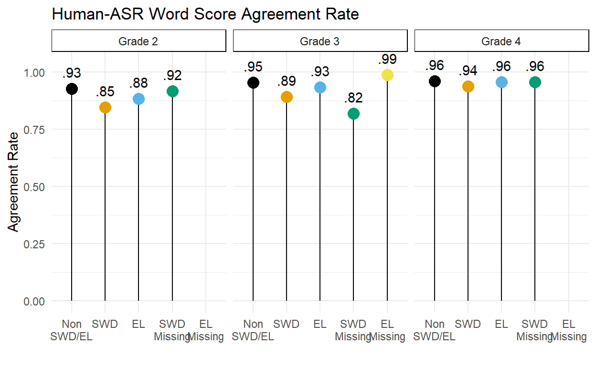
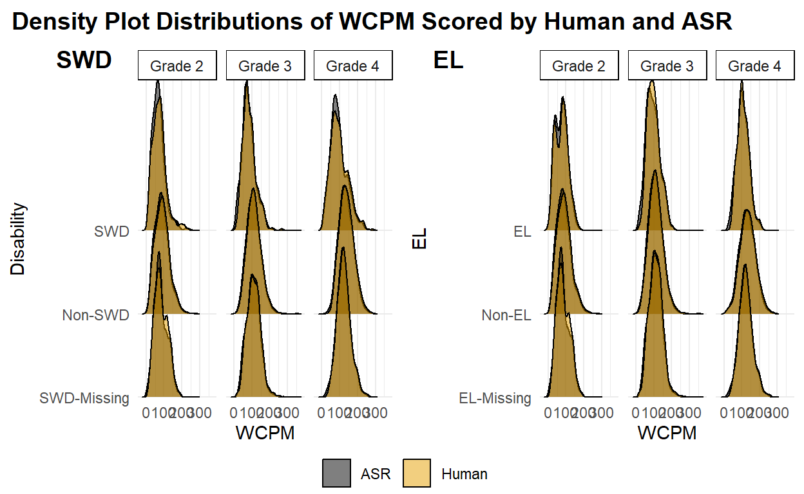

The purpose of this post is to compare the accuracy of CBM-R scores by an automatic speech recognition engine and human assessor scores for students with disabilities and those receiving English learner supports.
Automatic speech recognition (ASR) can be applied in schools to score CBM-R assessments, helping to: reduce administration errors by standardizing the delivery, setting, and scoring (e.g., timing the reading for exactly 60 seconds, correctly calculating and recording the correct WCPM score in the database); reduce the opportunity cost of large-scale CBM-R administration by assessing small groups or an entire classroomsimultaneously in only a few minutes so that a single educator can monitor the integrity of the environment for a group of students.
But more research is needed on how these ASR systems perform for diverse student groups. The purpose of this study is to compare the accuracy of CBM-R scores by an automatic speech recognition engine and human assessor scores for students with disabilities (SWD) and those receiving English learner supports (EL).
These results are part of our larger Content & Convergent Evidence Study.
In answer to our first research question, across Grades 2 to 4, the ORF word score agreement rates between human criterion and ASR were lower for SWDs compared to their non-SWD/non-EL peers. There was no difference in agreement rates between EL students and their non-SWD/non-EL peers.
In answer our second research question, the differences in WCPM between the human scoring criterion and ASR scoring of ORF were not exacerbated for SWD or EL students. In other words, the one can expect similar ASR WCPM scores for SWD and EL students as for their non-SWD and non-EL peers.
Thus, we can speculate that the ASR may be less accurate than a human scorer for SWDs at the word level, but the difference in scoring for SWDs is mitigated when scores are aggregated at the passage level.
The total sample size was \(N\) = 650 students; 153 in Grade 2, 182 in Grade 3, and 315 in Grade 4.
We did not require systematic student demographic information from each school, rendering a complete description of the student sample’s demographics unfeasible; however, we were able to merge study data with archived data and recover some sample demographic data. The archived demographic data incomplete, so we report missing data here, and also include Missing in our models as a group in both disability and EL status.
| Sample Description | |||
|---|---|---|---|
| Characteristic1 | Grade 2, N = 153 | Grade 3, N = 182 | Grade 4, N = 315 |
| Sex | |||
| Female | 67 (44%) | 79 (43%) | 116 (37%) |
| Male | 73 (48%) | 64 (35%) | 118 (37%) |
| Missing | 13 (8.5%) | 39 (21%) | 81 (26%) |
| Ethnicity | |||
| Hispanic/Latino | 28 (18%) | 26 (14%) | 41 (13%) |
| Not Hispanic/Latino | 112 (73%) | 117 (64%) | 193 (61%) |
| Missing | 13 (8.5%) | 39 (21%) | 81 (26%) |
| Students with a Disability (SWD) | |||
| Yes | 21 (14%) | 11 (6.0%) | 33 (10%) |
| No | 119 (78%) | 132 (73%) | 201 (64%) |
| Missing | 13 (8.5%) | 39 (21%) | 81 (26%) |
| English Learners (EL) | |||
| Yes | 17 (11%) | 12 (6.6%) | 17 (5.4%) |
| No | 123 (80%) | 131 (72%) | 217 (69%) |
| Missing | 13 (8.5%) | 39 (21%) | 81 (26%) |
|
1
Statistics presented: n (%)
|
|||
To answer research question one, we calculated the word score agreement rates between human and ASR scoring. That is, if both hman and ASR scored a word read as either correct or incorrect, their scores agreed; if one scored a word as read incorrectly and the other as read correctly, their scores disagreed. The agreement rates were calculated for each passage passage each student read.
The table below shows the average observed ORF word score agreement rates between human and ASR scoring by grade. The 650 sample students read a total of 13180 passages. Agreement rates were lowest for Grade 2 (.89), and higher for Grades 3 (.93) and 4 (.94).
[1] 13180| Average ORF Word Score Agreement Rates between Human Criterion and ASR Scoring, by Grade | |||||
|---|---|---|---|---|---|
| Agreement Rate | n | ||||
| Mean | SD | Students | Passages | Recordings | |
| Grade 2 | 0.89 | 0.14 | 153 | 107 | 3,666 |
| Grade 3 | 0.93 | 0.10 | 182 | 106 | 4,791 |
| Grade 4 | 0.94 | 0.09 | 315 | 106 | 4,723 |
The table below shows the average observed ORF word score agreement rates between human and ASR scoring by student group. Across groups, the agreement rates ranged from .83 (Grade 3 SWD) to .94.
| Average ORF Word Score Agreement Rates between Human Criterion and ASR Scoring, by Student Groups | ||
|---|---|---|
| Agreement Rate | ||
| Mean | SD | |
| Grade 2 | ||
| SWD | 0.83 | 0.15 |
| Non-SWD | 0.90 | 0.13 |
| SWD Missing | 0.89 | 0.14 |
| EL | 0.86 | 0.14 |
| Non-EL | 0.89 | 0.13 |
| EL Missing | 0.89 | 0.14 |
| Grade 3 | ||
| SWD | 0.87 | 0.14 |
| Non-SWD | 0.93 | 0.09 |
| SWD Missing | 0.92 | 0.09 |
| EL | 0.90 | 0.13 |
| Non-EL | 0.93 | 0.09 |
| EL Missing | 0.93 | 0.09 |
| Grade 4 | ||
| SWD | 0.90 | 0.11 |
| Non-SWD | 0.94 | 0.08 |
| SWD Missing | 0.94 | 0.09 |
| EL | 0.91 | 0.10 |
| Non-EL | 0.94 | 0.09 |
| EL Missing | 0.94 | 0.09 |
The figure below shows the distribution of agreement rates across grade and student groups. Although the mean agreement rates were generally strong across groups, there were many instances in which the agreement rate was quite low.

For our first research question, we fit mixed-effect generalized linear models (GLM) for each grade with random effects for student and passage, and regressed the word score agreement rate (the proportion of words scored correct or incorrect by both the human and the ASR for each student reading) on disability and EL status (three levels for each: Yes, No, and Missing). We compared these models to models that included an interaction term for disability by EL, but for models across grades, the addition of the interaction effects did not statistically improved the model fit compared to model without the interaction (Grade 2: df = 7, \(\chi^2\) = 0.311, p-value = 0.577; Grade 3: df = 8, \(\chi^2\) = 0.002, p-value = 0.968; Grade 4: df = 7, \(\chi^2\) = 0.235, p-value = 0.628). Thus, our final model for all grades included random effects for student and passage, and fixed effects for disability and EL status.
In response to research question 1, the table below shows the results of the final mixed effects model, with random effects for student and passage, and fixed effects disability and EL status. Note that the parameter estimates are on the logit scale. The intercepts represent the average word score agreement between the human criterion and the ASR scores for non-SWD and non-EL students, such that the average agreement rate for these students Grades 2 through 4 were 0.93, 0.95, and 0.96.
Across all grades, SWDs had a statistically significantly lower agreement rate than their non-EL and non-SWD (intercept) peers: Grade 2 = 0.85, Grade 3 = 0.89, and Grade 4 = 0.94. There was no such statistically significant differences in agreement rates for EL students.
| Results of Word Score Agreement Rate Mixed-Effect GLMs, by Grade | ||||||||||||
|---|---|---|---|---|---|---|---|---|---|---|---|---|
| Grade 2 | Grade 3 | Grade 4 | ||||||||||
| Estimate | SE | z-value | p-value | Estimate | SE | z-value | p-value | Estimate | SE | z-value | p-value | |
| Fixed Effects | ||||||||||||
| Intercept1 | 2.55 | 0.08 | 30.86 | > .001 | 3.05 | 0.07 | 43.89 | > .001 | 3.20 | 0.09 | 34.99 | > .001 |
| SWD-Missing | −0.14 | 0.23 | −0.60 | .551 | −1.53 | 0.98 | −1.56 | .118 | −0.11 | 0.08 | −1.41 | .159 |
| SWD | −0.85 | 0.20 | −4.26 | > .001 | −0.94 | 0.19 | −4.85 | > .001 | −0.48 | 0.14 | −3.39 | > .001 |
| EL-Missing | – | – | – | – | 1.37 | 0.97 | 1.41 | .159 | – | – | – | – |
| EL | −0.52 | 0.22 | −2.41 | .016 | −0.40 | 0.19 | −2.10 | .035 | −0.09 | 0.25 | −0.35 | .725 |
| Random Effects2 | ||||||||||||
| Passages | 0.25 | – | – | – | 0.26 | – | – | – | 0.66 | – | – | – |
| Students | 1.04 | – | – | – | 0.93 | – | – | – | 0.98 | – | – | – |
|
1
The intercept represents non-SWD and non-EL students.
2
Estimates reflect the standard deviations of the random effects.
|
||||||||||||
Thus, to answer our first research question, across Grades 2 to 4, the ORF word score agreement rates between human criterion and ASR were lower for SWDs compared to their non-SWD/non-EL peers. There was no difference in agreement rates between EL students and their non-SWD/non-EL peers.

To answer research question two, we calculated the ORF WCPM difference score between human and ASR scoring (i.e., human - ASR). The table below shows the observed mean WCPM scores by human and ASR, and their mean difference score, by student groups. The positive difference scores indicates that, on average, the human scores were greater than the ASR scores.
| Average WCPM Scores by Human and ASR, and their Difference, by Student Groups | ||||||
|---|---|---|---|---|---|---|
| Human Criterion WCPM | ASR WCPM | Human-ASR | ||||
| Mean | SD | Mean | SD | Mean | SD | |
| Grade 2 | ||||||
| SWD | 74.3 | 38.4 | 69.3 | 34.6 | 5.0 | 14.0 |
| Non-SWD | 91.3 | 40.0 | 87.3 | 38.8 | 4.0 | 13.0 |
| SWD Missing | 85.2 | 36.7 | 81.8 | 36.3 | 3.4 | 11.2 |
| EL | 75.5 | 35.8 | 73.8 | 33.7 | 1.7 | 12.7 |
| Non-EL | 91.0 | 40.4 | 86.6 | 39.2 | 4.4 | 13.2 |
| EL Missing | 85.2 | 36.7 | 81.8 | 36.3 | 3.4 | 11.2 |
| Grade 3 | ||||||
| SWD | 86.6 | 37.1 | 82.4 | 37.1 | 4.2 | 14.8 |
| Non-SWD | 113.6 | 39.3 | 109.7 | 38.9 | 3.9 | 11.5 |
| SWD Missing | 111.0 | 38.0 | 107.4 | 37.6 | 3.6 | 9.3 |
| EL | 99.4 | 35.8 | 94.5 | 38.0 | 5.0 | 11.2 |
| Non-EL | 112.2 | 40.2 | 108.4 | 39.5 | 3.8 | 11.9 |
| EL Missing | 111.0 | 37.8 | 107.5 | 37.4 | 3.5 | 9.3 |
| Grade 4 | ||||||
| SWD | 97.4 | 48.8 | 94.2 | 45.3 | 3.2 | 14.5 |
| Non-SWD | 139.7 | 40.4 | 135.1 | 40.1 | 4.6 | 12.4 |
| SWD Missing | 125.0 | 38.4 | 121.9 | 38.6 | 3.1 | 9.7 |
| EL | 109.6 | 32.7 | 105.8 | 34.3 | 3.8 | 9.0 |
| Non-EL | 135.4 | 44.5 | 131.0 | 43.5 | 4.4 | 13.0 |
| EL Missing | 125.0 | 38.4 | 121.9 | 38.6 | 3.1 | 9.7 |
The figure below shows the distributions of WCPM scores for human and ASR scoring, by grade and student group. Across groups, the distributions largely overlap, indicating the human and ASR scores were generally quite similar.

For our second research question, we fit mixed-effect models for each grade with random effects for student and passage, and regressed the WCPM difference score (the human criterion score minus the ASR score) on disability and EL status (three levels for each: Yes, No, and Missing). We compared these models to models that included an interaction term for disability by EL, but for models across grades, the addition of the interaction effects did not statistically improved the model fit compared to model without the interaction (Grade 2: df = 8, \(\chi^2\) = 0.083, p-value = 0.773; Grade 3: df = 9, \(\chi^2\) = 0.003, p-value = 0.958; Grade 4: df = 8, \(\chi^2\) = 0, p-value = 0.999). Thus, our final model for all grades included random effects for student and passage, and fixed effects for disability and EL status.
In response to research question two, the table below shows the results of the final mixed effects model, with random effects for student and passage, and fixed effects disability and EL status. The intercepts represent the difference in WCPM scores between the human criterion score and the ASR for non-SWD and non-EL students, such that the average WCPM difference for these students Grades 2 through 4 were 4.5 WCPM, 4 WCPM, and 4.8 WCPM, respectively. These intercept estimates were all statistically significantly greater than zero, meaning that on average, the human criterion WCPM score was greater than the ASR WCPM score for non-SWD and non-EL students.
Although the fixed effect parameters varied in magnitiude and direction across grades (-4.25 to 4.76), no parameter was statistically significant.
Thus, to answer our second research question, the differences in WCPM between the human scoring criterion and ASR scoring of ORF are not exacerbated for SWD or EL students. In other words, the one can expect similar ASR WCPM scores for SWD and EL students as for their non-SWD and non-EL peers.
Given the results of research question one, we can speculate that the ASR may be less accurate than a human scorer at the word level; but given the research question two, the difference in scoring for SWDs is mitigated when scores are aggregated at the passage level.
| Grade 2 | Grade 3 | Grade 4 | |||||||
|---|---|---|---|---|---|---|---|---|---|
| Estimate | SE | t-value | Estimate | SE | t-value | Estimate | SE | t-value | |
| Fixed Effects | |||||||||
| Intercept1 | 4.52 | 0.83 | 5.42 | 3.96 | 0.59 | 6.74 | 4.76 | 0.71 | 6.73 |
| SWD-Missing | −0.99 | 2.36 | −0.42 | 4.06 | 8.62 | 0.47 | −0.84 | 1.01 | −0.83 |
| SWD | −1.02 | 2.06 | −0.50 | 0.24 | 1.72 | 0.14 | −0.85 | 1.43 | −0.59 |
| EL-Missing | – | – | – | −4.25 | 8.53 | −0.50 | – | – | – |
| EL | −2.30 | 2.22 | −1.04 | 1.48 | 1.67 | 0.89 | −2.08 | 2.26 | −0.92 |
| Random Effects2 | |||||||||
| Passages | 2.21 | – | – | 1.64 | – | – | 3.39 | – | – |
| Students | 10.59 | – | – | 8.04 | – | – | 8.68 | – | – |
| Residual | 8.10 | – | – | 8.28 | – | – | 8.40 | – | – |
|
1
The intercept represents non-SWD and non-EL students.
2
Estimates reflect the standard deviations of the random effects.
|
|||||||||
The research reported here was supported by the Institute of Education Sciences, U.S. Department of Education, through Grant R305A140203 to the University of Oregon. The opinions expressed are those of the authors and do not represent views of the Institute or the U.S. Department of Education.